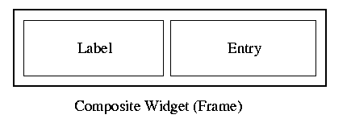

In Perl/Tk, there is a limited set of standard widgets. In the core Tk library, the following widgets exist: Button, Canvas, Checkbutton, Entry, Frame, Label, Listbox, Menu, Menubutton, Message, Scale, Scrollbar, Radiobutton, Text and Toplevel. These are implemented in C.
One would like to have more widgets than that. For example, there is no combobox-like widget in core Tk. Ideally, this widget would be created in the standard Perl/Tk way (that is, using the $parent->WidgetName(options...) notation). It should handle the standard Tk options like -background, -font and maybe some additional widget-specific options. It would be nice if some standard methods would do something meaningful with this new widget, e.g. the get method should return the current text of the combobox, just like in an entry widget.
To construct a combobox, one can use the standard widgets: label (for the description), entry (to hold the current selected value), button (to popup the list of options), frame (as a container for the label, entry and button widgets), listbox (for the list of options) and probably an additional toplevel window (because the listbox is usually displayed in an extra window).
A combobox implementation shipped with Perl/Tk is the BrowseEntry widget. It is implemented using the mentioned widgets. It's nearly transparent to use a browseentry, because it behaves like it should: as a combination of a listbox (thus understanding the insert and delete methods of a listbox) and an entry widget (so it's possible to bind a variable with -variable to the widget).
Basically it's possible to create new widgets by simply using standard object oriented mechanisms: a new method for creation of subwidgets and handling of options. Methods would delegate the task to certain subwidgets. But it's easier to use the standard mechanisms of Tk. It removes the burden of doing the same option and method handling over and over again.
You should be familiar with the object oriented concepts of Perl. There is the perltoot manpage included in the Perl distribution, which contains an object-oriented tutorial by Tom Christiansen. For a later reference, the Tk::mega manpage documents some of the methods needed for widget creation.
I will explain some concepts by pointing at the Tk::LabEntry widget, which is in the standard Perl/Tk distribution. This widget is rather small in code size, but contains a lot of magic behind the scenes.

Here's a script demonstrating the use of the LabEntry:
use Tk;
use Tk::LabEntry;
$top = new MainWindow;
$l=$top->LabEntry(-label => "Enter text: ",
-labelPack => [ "side" => "left" ],
-textvariable => \$foo,
)->pack;
MainLoop;
The -label and -textvariable don't need further
explanation. The -labelPack option controls the relative
placement of the both subwidgets. By default, the label will be placed
above the entry widget, but you can use every pack option to change
this placement.
The original module code is here. It's installed on your computer on a location like /usr/local/lib/perl5/site_perl/5.005/i386-freebsd/Tk/LabEntry.pm or similar.
And now the module code:
# Copyright (c) 1995-1999 Nick Ing-Simmons. All rights reserved. # This program is free software; you can redistribute it and/or # modify it under the same terms as Perl itself. package Tk::LabEntry;This is the obvious package declaration, beginning with the Tk:: prefix. Note that the Tk namespace is officially owned by Nick Ing-Simmons. If you want to contribute Tk widgets, you should first discuss it on the Perl/Tk mailing list (see the mailing list page for subscription information).
use vars qw($VERSION); $VERSION = '3.011';Nothing special about this variable, too. The $VERSION variable should be defined, both for your own version tracking and for the CPAN.pm module. So the CPAN.pm module can determine whether there is a newer version of the widget (for example when calling the "reinstall recommendations" function in the CPAN shell).
use base qw(Tk::Frame);This line does two things: first it loads the Tk::Frame module. Second it puts the Tk::Frame to the @ISA list, making it a superclass of the current class.
use Tk::widgets qw(Label Entry);This command will preload the Tk::Label and Tk::Entry modules. It is not strictly necessary, as core Tk widgets are known to the system and autoloaded on demand.
Construct Tk::Widget 'LabEntry';This will construct a new widget with the name LabEntry, so you can say:
sub PopulateThe Populate method is the most important method for composite widget creation. This method should create all needed subwidgets and declare and/or handle arguments for the new widget.
{
# LabeledEntry constructor.
#
my($cw, $args) = @_;
The Populate method excepts two arguments: the reference to the widget
itself and a reference to the arguments hash. Remember that the widget
itself is just a frame widget (because Tk::Frame is the
superclass of this widget), which will get some additional
functionality in this class.
$cw->SUPER::Populate($args);First, we call the Populate method of the superclass of this class. Since the LabEntry class is derived from the Tk::Frame class, this will call the Tk::Frame::Populate method. This is necessary so all options and create instructions for the frame widget are processed, too.
# Advertised subwidgets: entry.
my $e = $cw->Entry();
$e->pack('-expand' => 1, '-fill' => 'both');
These lines will create an Entry widget and pack it into the Frame
widget.
$cw->Advertise('entry' => $e );
This "advertises" inner widgets to the outer world. Once the
Tk::LabEntry widget is created, one can use the
Subwidget method to access the inner widgets:
$cw->ConfigSpecs(DEFAULT => [$e]);Normal ConfigSpecs descriptions are far longer. This here contains only one entry, meaning that all configure options should be handled by the entry widget. I will show some other examples for the ConfigSpecs description later in this article.
$cw->Delegates(DEFAULT => $e);The ConfigSpecs description can be seen as an option delegation table. The Delegates description is a method delegation table. This describes which subwidgets will handle unknown method calls, that is, methods not handles by this module. In this case, all unknown method calls will go to the entry widget $e. For example, you can still use the entry method get to get parts of the entry text.
$cw->AddScrollbars($e) if (exists $args->{-scrollbars});
}
The method AddScrollbars creates an additional scrollbar for
the widget. If the LabEntry is created with
1;Finally, like every Perl module, this one is closed with a true value.
In the module above, only the entry widget was actually created. But what about the label widget? Well, there is some magic in the frame widget itself. The frame widget understands the options -label, -labelVariable and -labelPack. The Populate method of the frame widget will take this options and create a label widget at the appropriate position (as given by labelPack). Remember that the Populate method of Tk::LabEntry calls the Populate method of the superclass.
$w->ConfigSpecs
(-repeatinterval => ['METHOD', 'repeatInterval', 'RepeatInterval', 50],
-repeatdelay => ['METHOD', 'repeatDelay', 'RepeatDelay', 500],
-decbitmap => ['METHOD', 'decBitmap', 'DecBitmap',
$Tk::FireButton::DECBITMAP],
-incbitmap => ['METHOD', 'incBitmap', 'IncBitmap',
$Tk::FireButton::INCBITMAP],
-bell => ['METHOD', 'bell', 'Bell', undef],
-background => ['DESCENDANTS', 'background', 'Background', undef],
-foreground => ['DESCENDANTS', 'foreground', 'Foreground', undef],
-precommand => ['CALLBACK', 'preCommand', 'PreCommand', undef],
-command => ['CALLBACK', 'command', 'Command', undef],
-variable => ['METHOD', 'variable', 'Variable', undef],
-value => ['METHOD', 'value', 'Value', undef],
-data => ['PASSIVE', 'data', 'Data', undef],
);
The argument to ConfigSpecs is a hash. The keys (beginning with a
dash) specify the options the widget should handle. With the special
key DEFAULT, non-specified options will be delegated to another
subwidget.
The values of the hash are references to four-element arrays. The first element is the type of option. A common type is 'PASSIVE', which means that the configuration value will simply be stored in the Configure hash of the widget. Other types are 'METHOD' (handling of the option will be done with a method of the same one), 'CALLBACK' (argument is a callback, that is, an anoymous subroutine or a Perl/Tk styled callback), 'DESCENDANTS' (option handling is delegated to the subwidgets). A complete list of types can be found in the Tk::configspec manpage.
The second and thirs elements are the name and class of the option for retrieval from the option database. Normally that's the option name capitalized (in the case of the name the first letter is always lowercase). The fourth value is the predefined value for this option or undef.
To use the option database specifications, one can use the X11 resource database under Unix or the optionAdd method from the Perl/Tk script itself (the above ConfigSpecs description is from the Tk::Date widget):
$top->optionAdd("*mydate.repeatInterval", 10, "userDefault");
$top->optionAdd("*mydate.repeatDelay", 100, "userDefault");
$d = $top->Date(Name => "mydate")->pack;
For derived widgets, you have also to include the Tk::Derived module to the @ISA path of the widget (for frame- and toplevel-based widgets this is done automatically). Therefore the "use base" line should look like this:
use base qw(Tk::Derived Tk::Label);
The Populate section is rather short. There is no creation of subwidgets (after all, it's only a derived widget), just some argument handling. In ScrollLabel's Populate method, the setting of the -anchor option is forced to "w". In the ConfigSpecs description, a new option -repeatinterval with a default of 100 ms is added.
That's basically all. There are two methods start and stop to control the scrolling of the label. The repeat interval is determined by simply calling cget on the -repeatinterval option. Note that every Tk widget object is a blessed hash, which can be populated by custom keys (unless they start with an underscore - these are reserved for internal Tk use). Here the "Repeat" key is used to store the id of the repeated callback.
New widget instances are created by calling a method on the parent
widget:
The default new method calls the following methods:
Tk::Widget::new
Tk::Widget::ClassInit (overrideable --- Carry out class bindings (or whatever))
Tk_cmd (get the sub for the creation of the core tk widget...
this dives into C code)
Tk::Widget::SetBindtags (set the bindtags for this widget, overrideable)
Tk::Widget::InitObject (overrideable)
InitObject is in normal or non-derived widgets empty
in derived (composite) widgets InitObject calls:
Tk::Widget::Populate (overrideable)
Tk::Derived::ConfigSpecs